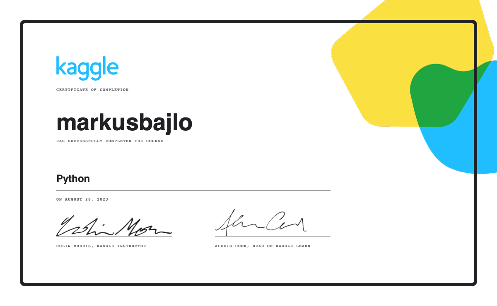

Hi, I'm Markus Bajlo.
Welcome to my website!
About me
I'm 26 years old, born in Stockholm, Sweden. I like cooking and traveling, a lot. I intend to study physics next fall, hence the incredibly nerdy theme (No, the orbits and their sizes and whatnot are not to scale, I tried but it didn't look very good so I had to shrink it down).
I'm currently in Australia working to get some practical experience before I start working in an office. In my free time I try to learn about things. Most recently I've been learning about japanese knives, trying to understand what makes them so good. Another set of projects I have is writing code. Using python and PyTorch I've been trying to understand Speech Enhancement by training CNNs to make predicitons about speech quality in a non-intrusive way, specifically in terms of the Mean Opinion Score (MOS). You can read more about MOS in the MOSnet paper.
Projects
- This website, see code at GitHub.
- Image classification with TensorFlow and Keras.
- Multi-class classification of stack overflow questions with TF.
Certificates
CV
Social links
Thank you for visiting my website!